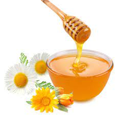
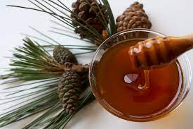
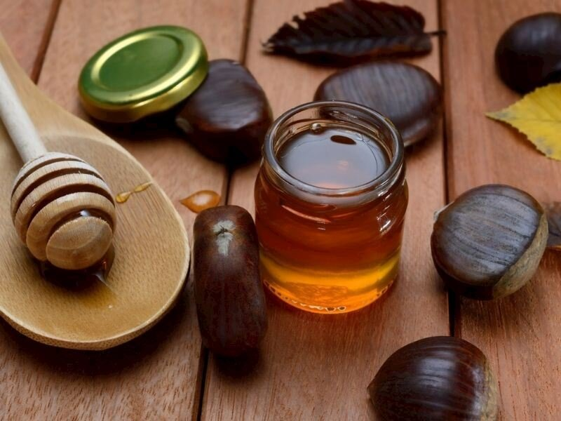
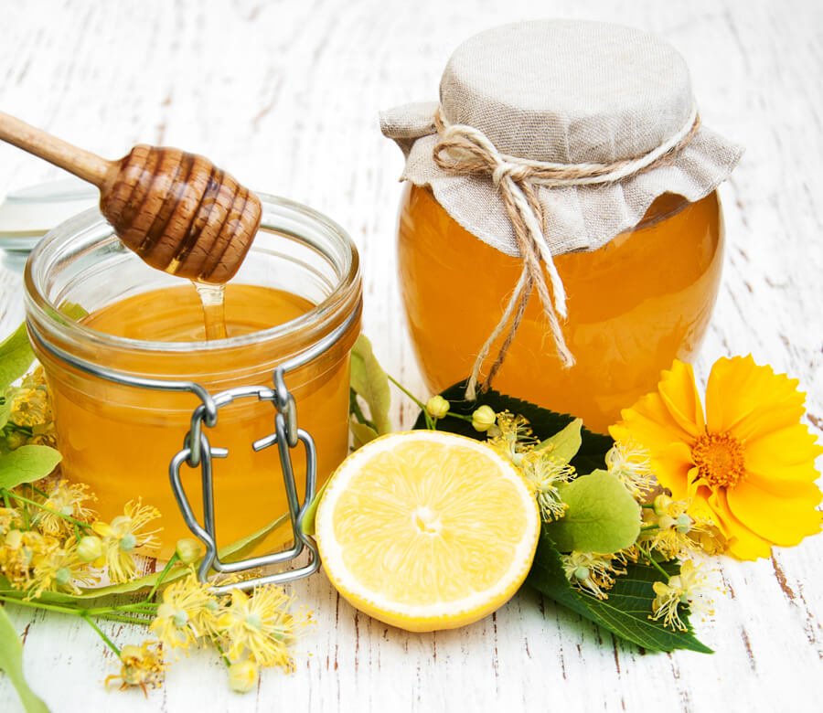
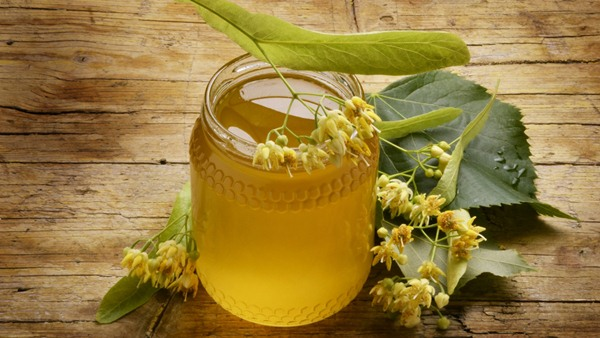

ÇİÇEK BALI
Çiçek balı, çiçeklerin nektarlarının bal arıları tarafından toplandıktan sonra, kendi bünyelerindeki enzimlerle karıştırarak yapısal değişime uğrattıkları tatlı ve doğal bir gıda maddesidir. Bal ürünleri, enfes aroması ve lezzeti ile her yaştan insanın severek tükettiği bir besindir. İçeriğinde barındırdığı yüksek mineraller ve vitaminler nedeniyle bal, aromasının ve lezzetinin yanı sıra insan vücudu için oldukça faydalı bir gıda maddesidir.

ÇAM BALI
Çam balı arıların çiçek poleninden değil, Akdeniz iklimine mahsus bazı çam ağacı türlerinin gövdesinde yaşayan bir aracı böceğin salgısını kullanarak ürettiği, müstesna bir baldır. Dünyada sadece Türkiye ve Yunanistan'da bulunur.

KESTANE BALI
Kestane balı Artvin yöresinde yaygın bir şekilde üretilen bir bal çeşididir. Yurdumuzun Doğu Karadeniz Bölgesinde bulunan kestane ağaçlarının çiçek özlerinin toplanmasıyla oluşur. Bu bal Mayıs ve Haziran aylarında açan çiçeklerin özlerinden meydana gelir.

NARENCİYE BALI
Narenciye balı; Akdeniz yöresinde üretilen bir bal çeşididir. Limon, portakal, mandalina, greyfurt gibi turunçgillerden nektar alınır. Arılar bu nektarı vücutlarındaki sindirim enzimi ile karıştırarak kovana getirir ve bunun olgunlaşması sonucu da narenciye balı oluşur.

IHLAMUR BALI
ıhlamur çok üretken bir bal ağacıdır. Tek bir ağacın çiçeklerinden 18 kilogram kadar yüksek kaliteli bal nektarı elde edilebilir ve bal arıları her bir çiçekten 28 grama kadar nektar toplayabilirler.